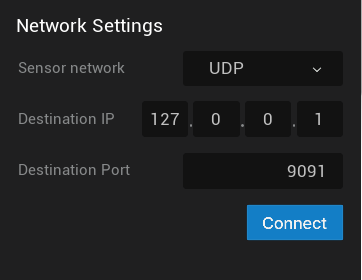
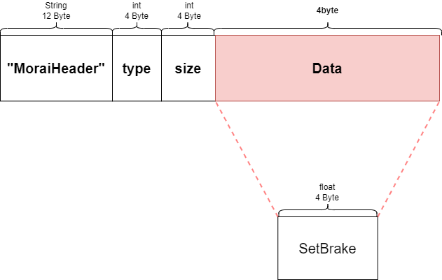

Network Configuration
This section describes the configuration of the network environment of MORAI SIM: Air, the setting method for data communication between external systems, and sending/receiving messages.
Supported Communication Method
MORAI SIM: Air supports UDP and ROS2 for network communication between the simulator and external systems.
UDP is a widely used network protocol for transmitting data over the internet, while ROS2 (Robot Operating System 2) is a popular middleware for robotics and automation applications.
The MORAI SIM: Air simulator allows for sending sensor data and receiving aircraft control messages using either UDP or ROS2 communication methods.
To communicate with MORAI SIM: Air,
Depending on the simulator's message transmission/reception method, the following network settings are required.
-
MORAI SIM: Air sends sensor data to an external system
- UDP Network Settings in each sensor model in the simulator
- Receive UDP messages and publish to ROS2 using UDP to ROS2 Bridge
-
MORAI SIM: Air receives aircraft control messages from an external system
- UDP Network Settings provided by the simulator (Subscriber IP/Port setting)
- Subscribe to ROS2 messages and them over UDP using UDP to ROS2 Bridge
The UDP to ROS2 Bridge serves to connect data between the UDP-based simulator and the ROS2 system by receiving and transmitting UDP signals and issuing and subscribing to ROS2 as shown below.

The current simulator does not provide direct support for transmitting/receiving ROS2 messages. Therefore, UDP to ROS2 Bridge should be used for ROS2 communication with an external system.
Receiving Aircraft Control Messages
For the simulator to receive ROS2 messages via UDP,
Configure the ROS2 to UDP communication environment and set the network of the simulator in the order below.
Step 1: Subscribe to ROS2 messages
For this step, you need to install and run UDP to ROS2 Bridge.
Step 2: UDP network settings in the simulator
1) Activate the network menu
Click Network in the top left menu as shown below.

2) Configure Host IP/Port
The method of receiving aircraft control messages in the simulator consists of GHOST MODE and EXTERNAL CTRL protocol.
Configure the Host IP/Port as below to operate the aircraft in GHOST MODE by receiving external control messages.
- Host IP: Enter the IP of the host PC running the simulator
- Host Port: Enter the Port of Host PC
Host IP/Port configuration method for EXTERNAL CTRL protocol is the same as above.
3) Network connection
Click Connect at the bottom PROTOCOL_SUB_GHOSTMODE or PROTOCOL_SUB_EXTERNALCTRL.
Then, it enters into a standby state in which a control message can be received.
Step 3: Send messages from external server
Send a message from the external server to the simulator using UDP to ROS2 Bridge.
- Send coordinates by playing rosbag file
- Send UDP packet
UDP messages received by each mode are as follows.
- GHOST MODE:
Cirrus_tx
- EXTERNAL CTRL:
CIRRUS_CONTROL_POSITION// 101 SIM -> JSBSimCIRRUS_BRAKING// 102CIRRUS_ENGINE// 103
For details on the types and structure of UDP messages received in GHOST MODE or EXTERNAL CTRL, see the UDP Recieve Messages section.
Sending Sensor Messages
For the simulator to send UDP messages via ROS2,
Set the sensor network of the simulator in the order below and configure the UDP to ROS2 communication environment.
Step 1: Senosr network settings in the simulator
1) Place sensors on the aircraft
2) Configure Destination IP/Port
Configure Destination IP/Port for UDP network in Network Settings at the bottom of the sensor setting window.

- Destination IP and Port:
- Enter the IP and port of the target server that transmits sensor data in the simulator.
- In case of ROS2 communication in the server, enter the IP and Port of the server where UDP to ROS2 Bridge is installed.
3) Network connection
Click Connect at the bottom of Network Settings.
Then, it enters into a standby state in which sensor messages can be transmitted.
In the case of a Camera sensor, when a sensor network is connected, a preview window appears on the left side of the sensor setting window as shown below.
Step 2: Publishing to ROS2
For this step, you need to install and run UDP to ROS2 Bridge.
For details on the types and structure of UDP and ROS2 messages sent by the simulator, see the UDP Send Messages and ROS2 Send Messages section.
Network Message Specifications
This section describes details such as the type and format of messages received and transmitted by MORAI SIM: Air as described above.
UDP Messages Structure
All receiving and sending UDP messages are composed of 'Header + Data'.
If the UDP packet size exceeds 65000, it is internally separated and transmitted, and reassembled at the receiving point. However, if the receiver uses Morai's UDP module, even if the defined max buffer is less than 65000, the separation logic works when trying to send a message larger than the max buffer.
Ex) #define Max_buffer 1024: If the total data size to be sent exceeds 1024, it is sent separately.
Header Information
struct MoraiHeader
{
char header_name[12]; // MoraiHeader
int data_type; // data_type.h 참조
int data_size; // data size
};Data Information
The detailed data structure of the UDP message is described for each received and transmitted message as follows.
- 4 recieve control messages:
Cirrus_txCirrus_ControlPositionCirrus_BrakingCirrus_Engine
- 5 send sensor messages:
Sensor_NavSatFix(GNSS)Sensor_ImuSensor_ImageSensor_RadarSensorLidar
/*
Morai Data type define
*/
#ifndef DATA_TYPE_H
#define DATA_TYPE_H
enum class MoraiDataType : uint32_t
{
NONE = 0,
SENSOR_GNSS,
SENSOR_IMAGE,
SENSOR_RADAR,
SENSOR_IMU,
SENSOR_LIDAR,
CIRRUS_TX = 0x64, // 100 cirrus -> morai
CIRRUS_CONTROL_POSITION, // 101 SIM -> JSBSim
CIRRUS_BRAKING, // 102
CIRRUS_ENGINE, // 103
LARGE_DATA = 0x3E8, // 1000 for test
};
#endif
And the data structure of all receiving and sending UDP messages includes the following common struct type.
struct Ros_Timestamp
{
int32_t sec;
uint32_t nanosec;
};
struct Ros_HEADER
{
Ros_Timestamp stamp;
uint8_t str_len;
char* frame_id;
};
struct Sensor_NavSatStatus
{
int8_t status;
uint16_t service;
};
UDP Recieve Messages
The data structure and packets for each UDP message received by Morai SIM from the external Cirrus system are as follows.
Cirrus_tx
struct Cirrus_Tx
{
float lon; // deg
float lat; // deg
float alt; // ft
float heading; // deg
float roll; // deg
float pitch; // deg
float sur_aileron; // [-1 ~ 1]
float sur_flap; // [-1 ~ 1]
float sur_elevator; // [-1 ~ 1]
float sur_rudder; // [-1 ~ 1]
};
Cirrus_ControlPosition
struct Cirrus_ControlPosition
{
float SetDaCmd; // get_aileron -1 ~ +1
float SetRollTrimCmd; // get_aileron_trim (-0.1 ~ +0.1)
float SetDeCmd; // get_elevator -1 ~ +1
float SetPitchTrimCmd; // get_elevator_trim (-0.1 ~ +0.1)
float SetDrCmd; // get_rudder -1 ~ +1
float SetDsCmd; // get_rudder -1 ~ +1
float SetYawTrimCmd; // get_rudder_trim (-0.1 ~ +0.1)
float SetDfCmd; // get_flaps 0 ~ 1
};
Cirrus_Braking
struct Cirrus_Braking
{
float SetBrake; // Left + Right 0~1
};
Cirrus_Engine
struct Cirrus_Engine
{
float SetThrottleCmd; // get_throttle(i) 0~1
};
UDP Send Messages
The data structure and packet for each UDP message transmitted by MORA SIM to the external Cirrus system are as follows.
GNSS
struct Sensor_NavSatFix
{
int id;
Ros_HEADER header;
Sensor_NavSatStatus status;
double latitude;
double longitude;
double altitude;
double position_covariance[9];
uint8_t position_covariance_type;
};IMU
struct Sensor_Imu
{
uint32_t id;
Ros_HEADER header;
geometry_msgs::Quarternion orientation;
double orientation_covariance[9];
geometry_msgs::Vector3 angular_velocity;
double angular_velocity_covariance[9];
geometry_msgs::Vector3 linear_acceleration;
double liner_acceleration_covariance[9];
};
Camera (Image)
struct Sensor_Image
{
int id;
Ros_HEADER header;
uint32_t height;
uint32_t width;
uint16_t str_len;
char* encoding;
uint8_t is_bigendian;
uint32_t step;
uint8_t* data;
};Radar
struct Sensor_Radar
{
uint32_t id;
Ros_HEADER header;
uint8_t num_detections;
Radar_Detection detections[64];
};Lidar
typedef struct PointField
{
uint8_t name_length;
std::string name;
uint32_t offset;
uint8_t datatype;
uint32_t count;
} POINT_FIELD;
typedef struct SensorLidar
{
uint32_t id;
RosHeader header;
uint32_t height; // 2D structure of the point cloud.If the cloud is unordered, height is
uint32_t width; // 1 and width is the length of the point cloud.
uint8_t fields_len; // size of PointField
PointField* fields; // Describes the channels and their layout in the binary data blob.
bool is_bigendian; // Is this data bigendian ?
uint32_t point_step; // Length of a point in bytes
uint32_t row_step; // Length of a row in bytes
uint8_t* data; // Actual point data, size is(row_step* height)
bool is_dense; // True if there are no invalid points
} SENSRO_LIDAR;ROS2 Send Messages
The type and data format for each ROS2 message transmitted by MORA SIM to the external Cirrus system are as follows.
GNSS
-
Message Type: sensor_msgs/msg/NavSatFix
-
Data Format
No Name Type Unit Remarks 1 header Header 2 status NavSatStatus 3 latitude double deg 4 longitude double deg 5 altitude double deg 6 position_covariance double[9] East, North, and Up (ENU), in row major order 7 position_covariance_type uint8 deg 0: COVARIANCE_TYPE_UNKNOWN
1: COVARIANCE_TYPE_APPROXIMATED
2: COVARIANCE_TYPE_DIAGONAL_KNOWN
3: COVARIANCE_TYPE_KNOWN
IMU
-
Message Type: sensor_msgs/msg/Imu
-
Data Format
No Name Type Unit Remarks 1 header Header 2 orientation Quaternion 3 orientation_covariance double[9] Row major about x, y, z axes 4 angular_velocity Vector3 rad/sec 5 angular_velocity_covariance double[9] Row major about x, y, z axes 6 linear_acceleration Vector3 m/s^s 7 linear_acceleration_covariance double[9] Row major about x, y, z axes
Image (Camera)
-
Message Type: sensor_msgs/msg/Image
-
Data Format
No Name Type Unit Remarks 1 header Header 2 height uint32 number of rows 3 width uint32 number of columns 4 encoding string 'bgra8' 5 is_bigendian uint8 6 step uint32 value is (width * 4) 7 data uint8[] size is (step * height)
Radar
-
Message Type: morai_msgs/msg/RadarDetections
-
Data Format
No Name Type Unit Remarks 1 header Header 2 detections RadarDetection[] - RadarDetection
No Name Type Unit Remarks 1 detection_id uint16 Index of each radar detection point 2 position Point m x, y, z position of each radar detection point 3 azimuth float deg azimuth angle of each radar detection point in Degree 4 rangerate float m/s relative velocity of the radar detected target w.r.t radial direction 5 amplitude float amplitude of the reflected signal of the radar detected target(rcs)
Lidar
-
Message Type: sensor_msgs/msg/PointCloud2
-
Data Format
No Name Type Unit Remarks 1 header Header 2 height uint32 If the cloud is unordered, height is 1 3 width uint32 Width is the length of the point cloud 4 fields PointField[] Describes the channels and their layout in the binary data blob 5 is_bigendian 6 point_step uint32 Length of a point in bytes 7 data uint8[] size is (row_step*height) 8 is_dense bool True if there are no invalid points